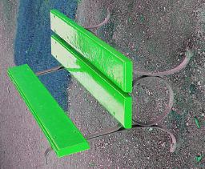
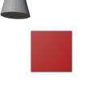
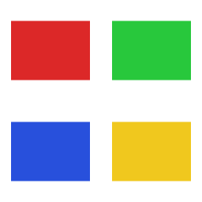
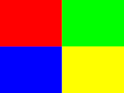

Thumbnails for the files Windows can't show.
Thumbwright is a Windows Explorer thumbnail provider and right-click toolkit, written in Rust. It covers 315 formats, including camera RAW, JPEG XL, HEIC, Blender scenes, CAD drawings, archives and comics. Untrusted decoders run in a separate locked-down process, so a broken file can't take Explorer down with it.

Real files, real thumbnails
Each of these was rendered by twctl thumbnail from the project's test files, through the same code Explorer uses.
.jxlJPEG XL, libjxl conformance set.crwCanon RAW, embedded preview
.jxlEXIF orientation honoured
.blendBlender, saved preview
.7zArchive contact sheet
.pdnPaint.NET documentFormat families:
- Camera RAW: CR3, CR2, CRW, NEF, ARW, ORF, RW2, RAF, X3F, DNG and more
- Modern images: JPEG XL, JPEG 2000, HEIC/AVIF, JXR, WebP, QOI
- Design and 3D: Blender, Aseprite, GIMP XCF, PSD, Krita, SVG, meshes
- CAD and printing: DWG, DXF, FreeCAD, Fusion 360, 3MF, G-code previews
- Documents: PDF, EPUB, FB2, legacy Office, DjVu
- Archives: ZIP, 7z, RAR, CBZ/CBR/CBT comics
- Video and audio: video frames, album art from audio tags
- Packages: Android APK icons, Live Photos
- Long tail: scientific and legacy bitmaps (VIPS, FITS, PCX, TGA, ...)
Built to stay out of Explorer's way
Isolated decoders
OS codecs and complex decoders run in tw-worker.exe. It gets a 512 MiB memory cap, a CPU-time limit, no clipboard or desktop access and only its own standard handles, and it is killed when Explorer lets go.
Memory-safe Rust
No C or C++ is compiled anywhere in the dependency tree. Every in-process decoder runs under a time budget and a memory budget, and a panic is contained.
Reversible registration
Registration is journaled and never touches an extension's existing ProgID or default handler. Uninstalling removes exactly what it wrote, and twctl doctor reports any other handler you would be overriding.
Install
Windows 10 2004 or later, or Windows 11, x64. The binaries are Authenticode-signed.
# Chocolatey choco install thumbwright # or the MSI from the releases page (per-machine, silent) msiexec /i Thumbwright-0.1.0-x64.msi /qn
HEIC and AVIF thumbnails need Microsoft's HEIF/HEVC/AV1 codec extensions from the Store. twctl doctor tells you which codecs your machine has.